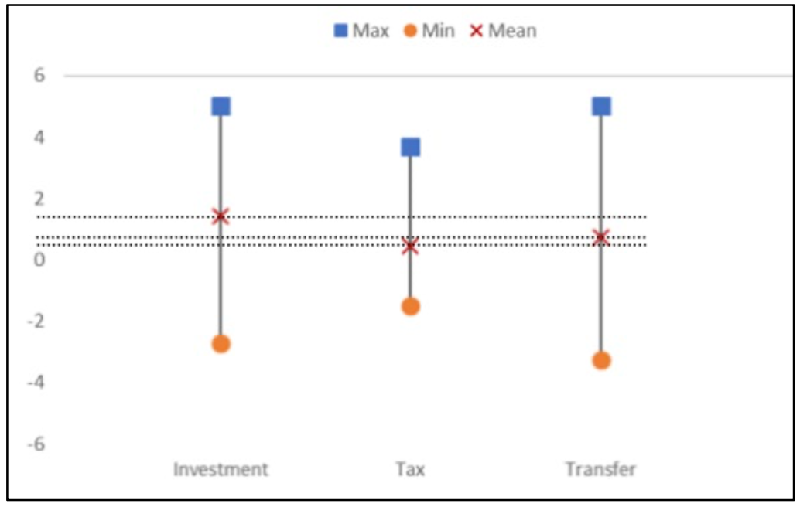
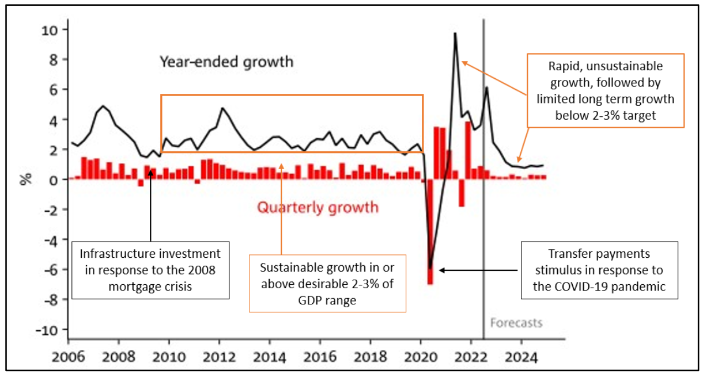
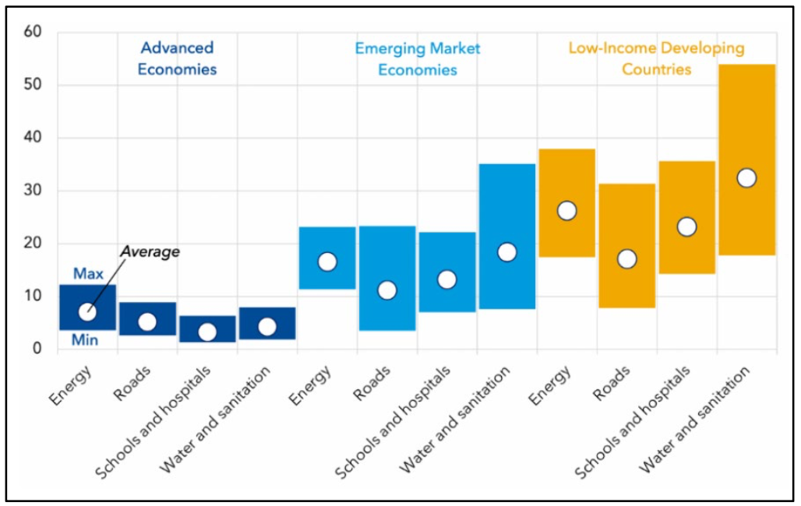

Economic stimulus refers to fiscal policies introduced by the Government to stimulate economic activity and growth in downturns to aid economic recovery (Rasure & Munichiello, 2022). These policies can come in a range of forms including transfer payments, which are direct payments from the government to individuals and businesses as experienced during COVID-19 (Potters & Munichiello, 2021), tax cuts, which involve temporary reduces in tax to stimulate spending (Boyle & Eichler, 2023), and notably, infrastructure investment. Infrastructure, particularly public infrastructure, refers to capital goods that exist in an economy that are accessible to all members of a country, this could include, roads, energy infrastructure, ports and more (Boyle & Bellucco-Cratham, Infrastructure: Definition, Meaning, and Examples, 2023).
Investment into infrastructure offers a unique value proposition as provides a stronger, longer-term multiplier effect when compared to alternative forms of stimulus, provides stable and sustainable economic growth, and contributes meaningfully to the economy by creating jobs and providing physical infrastructure. For this reason, the viability of Australia providing its economic stimulus primarily in the form of Investment into infrastructure will be considered both holistically and by considering its effect on Australia’s six key economic objectives including sustainable economic growth, price stability, sustainable development, external stability, full employment, and equitable distribution of income and wealth, which all serve to improve standard of living (Australian Treasury, 1998).
A key advantage of infrastructure spending as economic stimulus is the superior multiplier effect. The multiplier effect refers to the proportional increase in GDP as a result of government spending (Ganti & Kelly, 2023). For example, if a government were to construct a road, money would then be paid to engineers and construction workers, all who would likely increase their spending, the receiving businesses from this increase would then pass a proportion to their workers and etcetera.
Unsurprisingly, investment has a significantly greater multiplier effect than transfer payments and tax cuts due to the jobs created in the process. As seen in Figure 1, investment was found to have had the greatest short term multiplier effect with ~1.5 compared to ~0.3 and ~0.5 for tax cuts and transfer payments respectively. Further, investment has superior long run multiplier effects, in a study by Leduc and Wilson, it was found that an American transport infrastructure project created a significant 6.2 multiplier effect in the long run (Leduc & Wilson, 2012). This likely occurs due to future productive use of the infrastructure, for example, roads enable economic activity by allowing the transport of goods to more easily occur. Tax cuts and transfer payment stimulus do not observe similar practical use in the future.
A further benefit of higher numerical multipliers is cost effectiveness. Due to the increased proportion of an initial investment contributing to GDP, less initial investment is required into a more effective form of stimulus to achieve equivalent stimulating effects in the economy. Therefore, providing public goods, through investment, results in more significant and cost-effective economic stimulus, achieving more meaningful effects while also improving the Government’s budget position, reducing the nations dependability on foreign debt that usually results from governments operating in deficits during downturns to support the economy, aiding external stability.

Figure 1: Range and mean multiplier effects of different types of economic stimulus (Gechert, Sebastian, & Rannenberg, 2018)
In addition to practical and budgetary outcomes, effective investment in public goods can have a favourable stabilising effect on economic growth. Due to the duration of time it takes for investment to be realised, particularly in sectors such as construction, stimulus to the economy is evenly dispersed over multiple years. For example, if the government were to commission the construction of a bridge, an engineering firm would receive money, employ staff for a period of time; then a construction firm would receive money, employ staff for a longer period of time, and eventually these wages would trickle into the economy. This can take many years and provides continuous stimulus, in stark contrast to one time stimulus payments from transfer payments and tax cuts as they are quickly spent.
This is particularly true for the Australian economy as economists estimate Australian consumer’s marginal propensity to consume is between 0.9 and 0.95, indicating Australians would immediately spend 90 to 95 cents of every additional dollar of income they receive (Study.com, 2023). The phenomena of prolonged stimulus for investment projects can be observed in real economic data. As seen in Figure 2, Australia’s economic growth was in or above the target GDP percentage growth of 2-3% for the ~10 years following the implementation of a $39.2 billion AUD (inflation adjusted (Reserve Bank of Australia, 2022)) investment into infrastructure in response to the 2008 mortgage crisis (Swan, 2009). This lies in contrast to the rapid and unsustainable peak followed by a forecast downturn facilitated by the significant transfer payment response to the COVID-19 pandemic (Bembrick, 2022).
This has a great positive effect on the economy, sustainable economic growth is a key objective of the Australian Government and the 2008 public-goods-investment-focused response succeeded in achieving the target band. Additionally, avoiding rapid, unsustainable, and unpredictable growth in response to transfer payment stimulus aids business confidence. This could serve to further prosper the economy as it could prompt further business investment.

Figure 2: Australian GDP growth percentage, continuous and quarterly, with significant economic stimulus packages and their results annotated (Taylor, 2022).
To address inflation, all approaches will be to some degree inflationary. Investment, tax cuts, and transfer payments alike all increase aggregate demand. However, inflation is closely linked to economic growth, implying infrastructure investment would result in a similar (Hall & Boyle, 2023), prolonged but stable inflation rate, similar to the trend in economic growth seen above, this would strongly support the key economic objective of price stability. Conversely, transfer payments and tax cuts would observe sharp unsustainable peaks in inflation, damaging price stability.
One of the most significant benefits to infrastructure investment is that it provides significant employment opportunities throughout the construction period. Similarly to the monetary multiplier effect created by stimulus, a job multiplier exists. Direct jobs, such as construction and engineering employment, are created, but this also necessitates the creation of indirect jobs such as manufacturing in supply industries for construction (Tagliafierro, 2021). This effect is quantified in Figure 3, although significantly less than ‘Emerging Market Economies’ and ‘Low-Income Developing Countries’, Advanced Economies, including Australia, experience an approximate average of 6 jobs created both directly and through the multiplier for every additional $1 million USD invested into infrastructure.
This is undeniably significant, when currency is converted and inflation adjusted, this data suggests the 2nd fiscal policy in response to the 2008 mortgage crisis would have created an approximate 170,000 jobs (FXtop.com, 2023). This represents 1.5% of total Australian employment in 2008 (Australian Bureau of Statistics, 2008). Similar job creation from future infrastructure investment as stimulus would be a significant aid to the government’s key objective of full employment. Large, apparently public sector employment, may raise concerns about crowding out; however, it should be considered that government infrastructure is generally fulfilled by private sector companies through a tendering process, alleviating this concern (Department of Infrastructure, Transport, Regional Development, Communications and the Arts, 2023).

Figure 3: Job multiplier effect, direct and induced jobs created per $1 million additional investment (Moszoro, 2021)
A further benefit, completely unique to infrastructure investment as stimulus, is that physical infrastructure is provided for the country. Infrastructure investment is inevitable for countries, developing or developed alike, as maintenance is always required. Therefore, the bugetary efficiency of investment as stimulus can be further enhanced by constructing inevitable infrastructure projects in times of economic downturn to garner the additional advantage of stimulating the economy (Haughwout, 2019). This undeniably aids the key objective of sustainable development by providing physical infrastructure for the country.
Further, infrastructure has positive future benefits for the economy as touched on earlier, for example port infrastructure enables future trade with other nations. Intriguingly, it can also be argued that infrastructure aids the key objective of equitable distribution of income and wealth. Because Australians are taxed in a primerilly progressive manner and all Australians are equally able to utilise infrastructure such as roads, waste management, electricity, ecetera, lower income earners receive more use of public infrastructure for less investment, quasily redistributing wealth through infrastructure use.
Ultimately the balance of evidence strongly tilts in favour of Australia predominantly utilising infrastructure as future economic stimulus when compared to alternative options including transfer payments and tax cuts. Infrastructure investment is more cost effective, inducive to sustainable growth, provides employment and physical infrastructure while also addressing Australia’s six key economic objectives. Sustainable economic growth is enabled through its long-term multiplier effect, full employment is strongly assisted by both direct and induced employment, and price stability is assisted by the prolonged economic growth (unpredictable spikes in growth are avoided).
Sustainable development is aided through the provision of physical infrastructure, external stability is aided through increased cost effectiveness, resulting in less dependence on foreign debt during economic downturns, and finally, equitable distribution of income and wealth is aided to some extent by all levels of income earners having equal access to infrastructure. This strong support of the key government objectives suggests successful infrastructure investment would serve to improve standard of living. Although it may prove politically challenging, evidence presented suggests the Australian Government and citizens alike should more strongly consider the role infrastructure investment could play as an economic stimulus in the economy.
Bibliography
- Australian Bureau of Statistics. (2008, August 7). 6202.0 - Labour Force, Australia, Jul 2008. Retrieved from Australian Bureau of Statistics: https://www.abs.gov.au/AUSSTATS/abs@.nsf/Lookup/6202.0Main+Features1Jul%202008?OpenDocument=
- Australian Treasury. (1998). Macroeconomic Policy. Retrieved from Treasury.com.au: https://treasury.gov.au/sites/default/files/2019-03/ch3-2.pdf
- Bembrick, P. (2022). A brief overview of Australia’s economic response to COVID-19. Retrieved from The Global Advisory and Accounting Network: https://www.hlb.global/a-brief-overview-of-australias-economic-response-to-covid-19/#:~:text=The%20Federal%20Government%20initially%20committed,billion%20in%20direct%20economic%20support.
- Boyle, M., & Bellucco-Cratham, A. (2023, September 27). Infrastructure: Definition, Meaning, and Examples. Retrieved from Investopedia: https://www.investopedia.com/terms/i/infrastructure.asp
- Boyle, M., & Eichler, R. (2023, August 21). How Tax Cuts Affect the Economy. Retrieved from Investopedia: https://www.investopedia.com/articles/07/tax_cuts.asp
- Department of Infrastructure, Transport, Regional Development, Communications and the Arts. (2023). National Guidelines for Infrastructure Project Delivery. Retrieved from Department of Infrastructure: https://www.infrastructure.gov.au/infrastructure-transport-vehicles/infrastructure-investment-project-delivery/national-guidelines-infrastructure-project-delivery#:~:text=A%20public%2Dprivate%20partnership%20(PPP,services%20over%20the%20long%20term.
- FXtop.com. (2023). This tool converts currencies at a specific date using historical rates. Retrieved from FXtop.com: https://fxtop.com/en/historical-currency-converter.php?A=36.8&C1=AUD&C2=USD&DD=01&MM=01&YYYY=2021&B=1&P=&I=1&btnOK=Go%21
- Ganti, A., & Kelly, R. (2023, May 26). What Is the Multiplier Effect? Formula and Example. Retrieved from Investopedia: https://www.investopedia.com/terms/m/multipliereffect.asp
- Gechert, Sebastian, & Rannenberg. (2018). Which Fiscal Multipliers Are Regime-Dependent? A Meta-regression Analysis. Journal of Economic Surveys, 1160-1182.
- Hall, M., & Boyle, M. (2023, October 10). Why Does Inflation Increase With GDP Growth? Retrieved from Investopedia: https://www.investopedia.com/ask/answers/112814/why-does-inflation-increase-gdp-growth.asp
- Haughwout, A. (2019, May). Infrastructure Investment as an Automatic Stabilizer. Retrieved from Hamilton Project: https://www.hamiltonproject.org/publication/policy-proposal/infrastructure-investment-as-an-automatic-stabilizer/
- Leduc, S., & Wilson, D. J. (2012). Roads to prosperity or bridges to nowhere? theory and evidence on the. Cambridge: Mass: National Bureau of Economic Research.
- Moszoro, M. (2021). Putting Public Investment to Work. Retrieved from IMF Blog: https://www.imf.org/en/Blogs/Articles/2021/08/11/putting-public-investment-to-work#:~:text=Our%20new%20IMF%20staff%20research,they%20create%20many%20new%20jobs.
- Potters, C., & Munichiello, K. (2021, September 15). Transfer Payment: Definition, Types of Transfers, and Examples. Retrieved from Investopedia: https://www.investopedia.com/terms/t/transferpayment.asp
- Rasure, E., & Munichiello, K. (2022, December 1). What Is Economic Stimulus? How It Works, Benefits, and Risks. Retrieved from Investopedia: https://www.investopedia.com/terms/e/economic-stimulus.asp
- Reserve Bank of Australia. (2022). Inflation Calculator. Retrieved from Reserve Bank of Australia: https://www.rba.gov.au/calculator/annualDecimal.html
- Study.com. (2023). Economists think that the marginal propensity to consume for the Australian economy is between... Retrieved from Study.com: https://homework.study.com/explanation/economists-think-that-the-marginal-propensity-to-consume-for-the-australian-economy-is-between-0-9-and-0-95-based-on-our-simple-multiplier-formula-this-would-imply-that-the-multiplier-for-australia-should-be-at-least
- Swan, H. W. (2009, Feburary 3). $42 Billion Nation Building and Jobs Plan. Retrieved from Ministers Treasury portfolio: https://ministers.treasury.gov.au/ministers/wayne-swan-2007/media-releases/42-billion-nation-building-and-jobs-plan
- Tagliafierro, J. (2021, November 22). The Multiplier Effect: Which Industries are the Biggest Job Creators? Retrieved from Camoin Associates: https://camoinassociates.com/resources/the-multiplier-effect-which-industries-are-the-biggest-job-creators/
- Taylor, D. (2022, November 9). New data shows the economy is going to slow significantly over the coming two years. Retrieved from ABC News: https://www.abc.net.au/news/2022-11-09/the-economy-is-going-to-slow-significantly-over-two-years/101634818